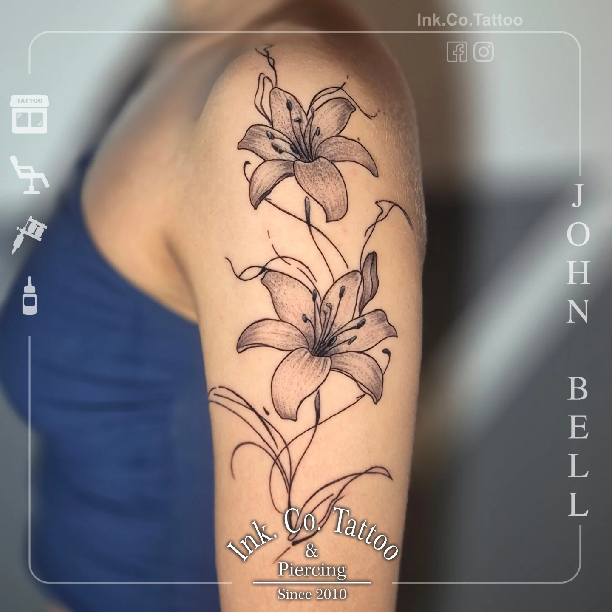
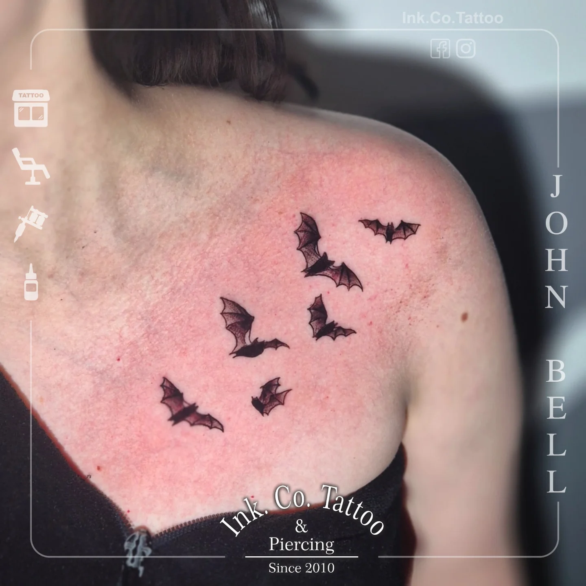
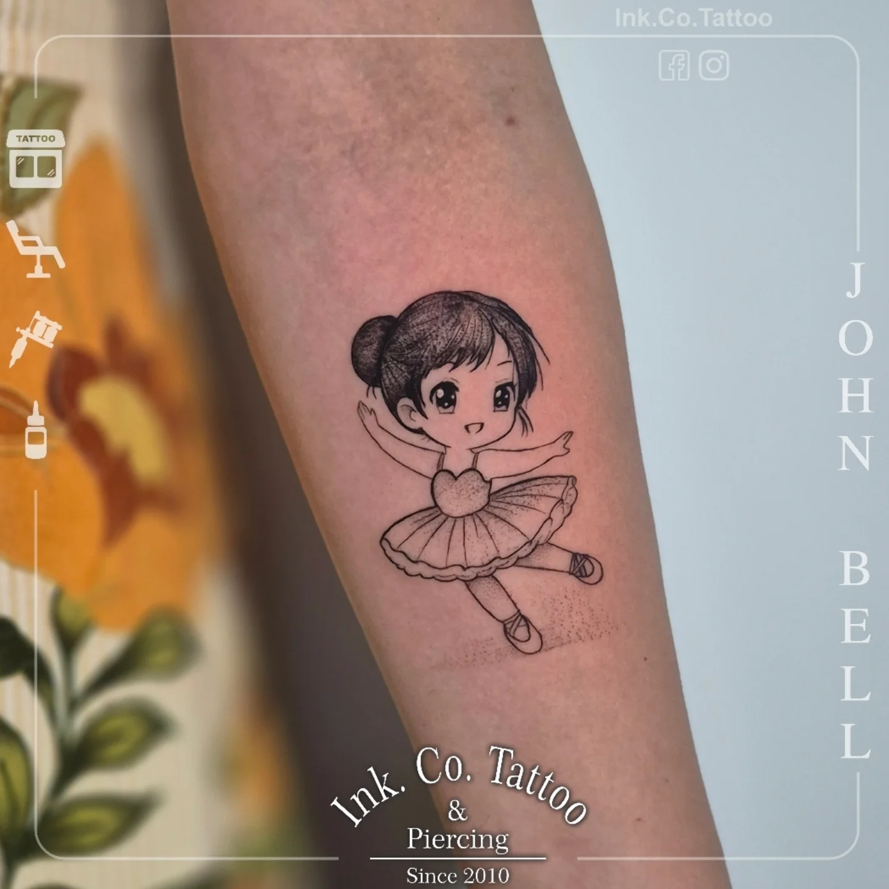
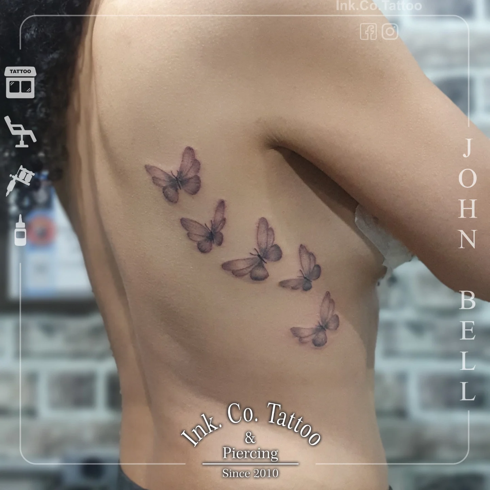
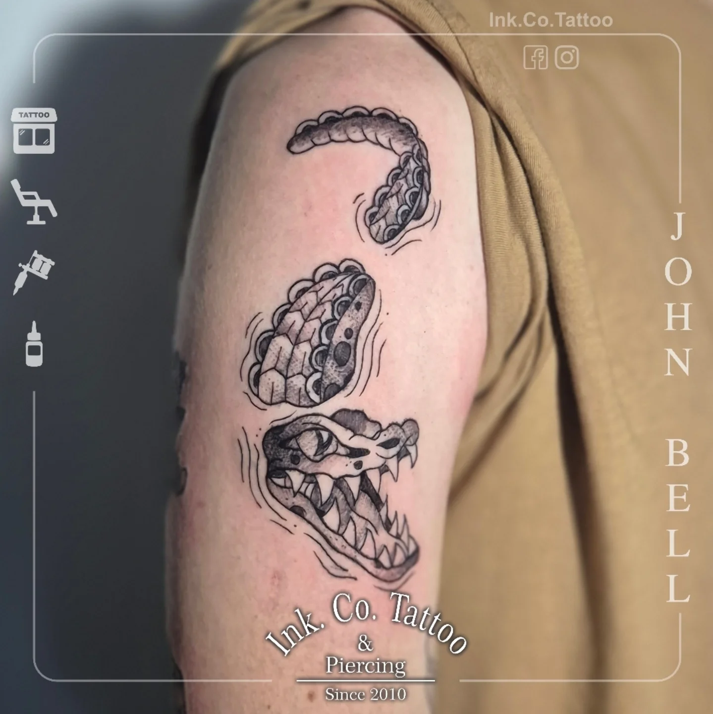

Tatuagem autoral
Oriental, Blackwork, Fine-line, Realismo P&C, Maori, Pet e Rua. Projeto criado pra você, do jeito que faz sentido na sua pele.
Quero orçar / agendar →R. Vieira de Morais, 923 · Santo Amaro — São Paulo
16 anos transformando pele em arte.
Oriental, Blackwork, Fine-line, Realismo e Maori. Traço autoral e atendimento que cuida de você do começo ao fim.
de estrada e traço autoral
acolhimento sem julgamentos
estúdio comandado por mulheres
material descartável, embalado e esterilizado
Portfólio
Uma amostra do traço do John. Do preto pesado do blackwork ao delicado do fine-line — cada projeto é autoral e feito pra durar.





Estilos & Serviços
Do primeiro esboço ao pós-cuidado. Cada estilo com a mão de quem tem 16 anos de estrada.
Oriental, Blackwork, Fine-line, Realismo P&C, Maori, Pet e Rua. Projeto criado pra você, do jeito que faz sentido na sua pele.
Quero orçar / agendar →Aquela tatuagem antiga que não te representa mais? A gente estuda o traço e transforma em algo novo, com peso e caimento certos.
Quero orçar / agendar →Joias de qualidade e curadoria de looks de orelha, septo e tragus. A Karina monta o conjunto que combina com você.
Quero orçar / agendar →Orientação de cicatrização do começo ao fim — inclusive pra quem tem tendência a queloide. Você não sai daqui sem saber cuidar.
Falar sobre cuidados →
Sobre o estúdio
Tatuador e body piercer, o John é conhecido pela atenção, pela paciência e por realmente cuidar de quem senta na maca. Indica tratamento, acompanha a cicatrização e não solta a mão do cliente depois que o trabalho fica pronto.
A Karina comanda o piercing e os projetos auriculares — elogiada pela educação e por escutar de verdade o que cada pessoa quer. Juntos, tocam um estúdio acolhedor, sem julgamentos, limpíssimo e organizado: women-owned e LGBTQ+ friendly.
Depoimentos
“Atendimento nota mil. O John é super atencioso, explica cada passo e o estúdio é impecável de limpo. Todo material aberto na minha frente, embalado e esterilizado. Saí apaixonada pela minha tattoo.”
“Tenho tendência a queloide e sempre tive medo. O John me orientou em tudo, indicou os cuidados e acompanhou a cicatrização de perto. Cicatrizou perfeita. Profissional de verdade.”
“Fiz meu projeto auricular com a Karina e ficou lindo demais. Ela escuta, sugere e monta um conjunto que combina com a gente. Educadíssima e super cuidadosa. Já quero voltar.”
Contato & Agendamento
Atendimento somente com agendamento. Chama no WhatsApp que a gente organiza tudo com você.
@johnbell.tatuador
R. Vieira de Morais, 923
Santo Amaro — São Paulo/SP
CEP 04617-012
Aberto até tarde — fecha às 23h30
Somente com hora marcada